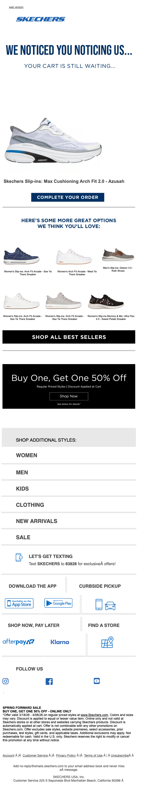

Did you forget something?
| From | SKECHERS <hello@msgs.skechers.com> |
| Received | 2026-03-30 13:20 UTC |
| Score | 6/10 |
## Email Review: "Did you forget something?" — Skechers Abandoned Cart
1. Executive Summary
This is a standard abandoned cart recovery email with a decent hook but a cluttered execution. The clever headline ("WE NOTICED YOU NOTICING US...") and personalized cart product give the email a strong opening, but Skechers buries the recovery message under a BOGO promotion, category links, app downloads, and multiple unrelated utility modules. The result is an email that starts focused and ends like a newsletter. The core conversion ask gets diluted well before the fold.
2. Business Impact Score: **6 / 10**
The fundamentals are there — cart item is visible, CTA exists, there's an incentive — but the email works against itself structurally. A recipient who doesn't convert on the hero block is unlikely to scroll through five more modules to get back to the point.
3. What's Working
- Headline copy is strong. "WE NOTICED YOU NOTICING US... YOUR CART IS STILL WAITING..." is playful without being cloying. It earns attention.
- Hero product is prominent. The specific cart item (a blue/white running shoe) is shown clearly with its name and a visible "COMPLETE YOUR ORDER" CTA. This is the right priority.
- BOGO offer adds incentive. "Buy One, Get One 50% Off" gives an undecided shopper a concrete reason to act now, not later.
- Recommendation module provides alternatives. Four product thumbnails below the cart item give the shopper an escape hatch if they're not sold on the specific item. Smart recovery logic.
4. What's Weak
- The BOGO promotion competes with the cart recovery. The promotional banner appears as a distinct section below recommendations, effectively splitting the email into two separate campaigns. It muddies whether the goal is cart recovery or driving a sale event.
- Bottom half is newsletter bloat. Category navigation (WOMEN / MEN / KIDS / CLOTHING / NEW ARRIVALS / SALE), app download prompt, curbside pickup, buy-now-pay-later, and find-a-store all appear in sequence. This is a cart recovery email, not a homepage.
- SMS opt-in module is off-message. "LET'S GET TEXTING" is a lead-gen ask dropped into a conversion email. Wrong context, wrong moment.
- Recommendation thumbnails are small. The four product images in the "You'll Love" module are rendered at a size that makes product differentiation difficult. They function more as visual filler than actionable discovery.
- No urgency signal visible anywhere. No "your cart expires in X hours," no low-stock flag, no countdown. The email communicates that the cart is waiting but gives no reason to act today over tomorrow.
5. Recommendations
1. Cut the email in half. Everything after the BOGO section should be removed or moved to a follow-up send. Keep the cart item, the recommendations, the offer, and one CTA. That's it.
2. Add urgency to the hero. A single line — "Items in your cart may sell out" or a 24-hour cart expiration notice — would sharpen the conversion pressure significantly.
3. Reframe or remove the BOGO. If the BOGO applies to the cart item, make that explicit and tie it directly to the recovery CTA. If it's a separate promotion, it doesn't belong in this email.
4. Enlarge recommendation thumbnails. If you're showing four products, make them large enough to differentiate. Small grids with illegible names don't drive clicks.
5. Remove the SMS opt-in. Save that ask for a dedicated lifecycle trigger. It's noise here.
6. Bottom Line
Skechers gets the first 30% of this email right — the hook is sharp, the product is present, the CTA is clear. But they then proceed to send the same person five more emails' worth of content. Cart recovery emails win by being short and pointed. This one tries to do too much and risks losing the shopper's attention before they ever reach the buy button.
7. Evidence
Overall purpose: Abandoned cart recovery — reminding the recipient that a specific shoe is still in their cart and prompting purchase completion.
Hero / primary value proposition: Bold headline with playful copy, specific cart product image (blue/white Max Cushioning running shoe), product name, and "COMPLETE YOUR ORDER" CTA button. Well-executed at the top of the email.
Membership / benefits section: Not present in this email.
Product discoverability / recommendation modules: A "Here's Some Great Options We Think You'll Love" section shows four small product thumbnails with names. Logical placement but images are too small to be compelling. Followed by a "SHOP ALL BEST SELLERS" dark CTA bar.
Utility / secondary modules: Heavy utility tail — category navigation links (WOMEN, MEN, KIDS, CLOTHING, NEW ARRIVALS, SALE), "LET'S GET TEXTING" SMS opt-in with app store badges, "DOWNLOAD THE APP / CURBSIDE PICKUP" section, "BUY NOW, PAY LATER / FIND A STORE" row, and a social follow section (Facebook, YouTube, and a third platform). All appear below the fold in sequence.
Bugs / friction / clarity issues: No visible broken images or overlapping text. Fine print at the very bottom is extremely small and likely unreadable without zooming. The BOGO offer block text is difficult to read at rendered size — discount terms and product exclusions are not legible.
## Technical Audit
## Technical Audit: Skechers — "Did you forget something?" (Abandoned Cart)
Sender: hello@msgs.skechers.com | ESP: Attentive (attentivemail.com)
1. Technical Summary
Table-based, 600px fixed layout built in Bee/Attentive. All links route through Attentive's click-tracking redirect (skechers.attentivemail.com/ls/click?upn=...). No fatal rendering defects in the visible markup, but several infrastructure issues below.
2. Link & Tracking Issues
HTTP links (not HTTPS) — all clickable links
Every anchor in the visible source uses http:// for both the redirect wrapper and the upstream image server:
`
http://skechers.attentivemail.com/ls/click?upn=...
http://image.emails.skechers.com/...
`
Modern mail clients (Gmail, Outlook 365) flag mixed-content HTTP links. Skechers.com itself is HTTPS-only, so the redirect chain contains a protocol downgrade before the final destination. All tracking links and image hosts should be https://.
target="_blank" missing rel="noopener noreferrer"
The logo anchor uses target="_blank" with no relationship attribute:
`html
<a href="http://skechers.attentivemail.com/ls/click?..." target="_blank">
`
This exposes the opener context. Add rel="noopener noreferrer" to all target="_blank" links.
UTM parameters not verifiable
Destination UTMs are obscured inside the base64-encoded upn= payload. Cannot confirm UTM presence or correctness without decoding redirects — flagged for QA spot-check (see §6).
3. Rendering & Accessibility
Empty <title> element
`html
<title></title>
`
Screen readers (NVDA, JAWS) announce this as the document name. Should contain a descriptive string, e.g., Skechers — Complete Your Purchase.
Malformed charset meta tag
`html
<meta content="text/html; charset=utf-8" />
`
Missing http-equiv="Content-Type". Correct form:
`html
<meta http-equiv="Content-Type" content="text/html; charset=utf-8" />
`
Without http-equiv, some legacy Outlook versions may not apply the charset declaration.
Image alt text not confirmed
The logo <img> tag is cut off in the truncated source before the alt attribute is visible. All images — especially product images in an abandoned cart context — must carry descriptive alt text. Verify the full source; images rendered with images-off will be invisible without it.
Preheader filler technique is functional
Uses a mix of U+034F (combining grapheme joiner) and U+00AD (soft hyphen) characters — standard inbox preview padding. No issue.
4. Personalization & Merge Tokens
No personalization visible in rendered content
For an abandoned cart trigger, the expected tokens are absent from the visible markup:
- No customer first name in the subject line or body
- No dynamic product name, image, price, or cart link
- Preheader is generic: *"You left something in your cart, get it before it's gone!"*
If Attentive is injecting personalized product blocks via server-side rendering before send, this may be intentional. If the template is static, this is a significant personalization gap — abandoned cart emails with product-specific content materially outperform generic ones. Verify whether product dynamic content blocks exist lower in the (truncated) template.
5. Compliance
CAN-SPAM / physical address / unsubscribe
Footer not present in the truncated source. These elements must be confirmed in the full HTML:
- Physical mailing address (required by CAN-SPAM §5(a)(5))
- Clear and conspicuous unsubscribe mechanism with ≤10-business-day processing
- Sender identification matching the
From:header (hello@msgs.skechers.com)
Sending domain authentication
msgs.skechers.com is a dedicated sending subdomain — consistent with proper SPF/DKIM/DMARC segmentation. Cannot verify header values from HTML alone; confirm via received headers:
- DKIM:
d=msgs.skechers.comord=skechers.comwith valid signature - SPF:
msgs.skechers.comincluded in Skechers' SPF record - DMARC: policy on
skechers.comshould be at leastp=quarantine
6. Email-to-Site Continuity
UTM parameters obscured in redirect chain
All CTAs route through skechers.attentivemail.com/ls/click?upn=<encoded>. The final destination URL and its UTM parameters are base64-encoded and cannot be inspected without decoding. Required QA step: decode at least the primary CTA and "web version" links to confirm:
utm_sourceis set (expected:attentiveoremail)utm_medium=emailutm_campaignmatches the send (e.g.,abandoned_cartor campaign ID)utm_contentdifferentiates CTA placement if multiple links point to the same destination
"Web version" link destination
The web version link (row-1, column-2) should resolve to a hosted version of this specific email, not a generic inbox or account page. Verify post-decode.
7. Recommendations
| Priority | Issue | Action |
|---|---|---|
| High | All links and image URLs use HTTP | Switch all http:// to https:// in Attentive template settings |
| High | Personalization tokens absent | Confirm product dynamic content blocks exist in full template; if not, add {{product_name}}, {{product_image}}, and {{cart_url}} tokens |
| Medium | Empty <title> tag | Add descriptive title string |
| Medium | Malformed charset meta | Add http-equiv="Content-Type" attribute |
| Medium | UTM parameters unverified | Decode 3–5 CTA URLs and confirm UTM schema before send |
| Medium | CAN-SPAM footer unverified | Confirm physical address and unsubscribe block exist in full template |
| Low | target="_blank" missing rel | Add rel="noopener noreferrer" to all external link targets |
| Low | Image alt text unconfirmed | Audit full HTML for empty or missing alt attributes on all <img> tags |
